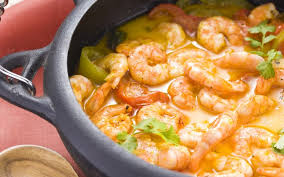
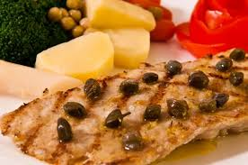
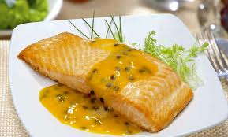

Peixes e frutos do mar
- 
- Moqueca de Camarão
- Camarão com molho.
- Autor: Silvana Ribeiro
- Avaliação: 5
- 77 pessoas avaliaram essa receita
- 
- Peixe com Alcaparrar
- Delicioso peixe ao molho de alcaparras.
- Autor: Ana Benati
- Avaliação: 4
- 81 pessoas avaliaram essa receita
- 
- Salmão com molho de maracuja
- Salmão assado ao molho de maracuja.
- Autor: Eduarda Oliveira
- Avaliação: 5
- 67 pessoas avaliaram essa receita